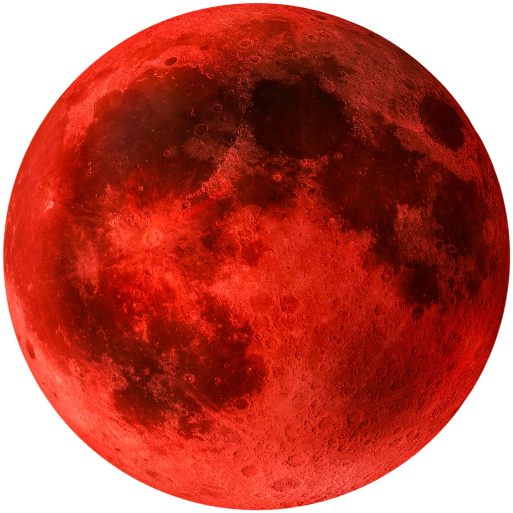

Tracklist de l'album Red Moon in Venus
Kali Uchis
- In My Garden... 0:25
- I Wish You Roses 3:39
- Worth the Wait (ft. Omar Apollo) 2:30
- Love Between... 2:16
- All Mine 3:29
- Fantaasy (ft. Don Toliver) 2:58
- Como Te Quiero Yo 2:14
- Hasta Cuando 2:09
- Endlessly 2:35
- Moral Conscience 3:32
- Not Too Late (Interlude) 2:35
- Blue 3:12
- Deserve Me (ft. Summer Walker) 4:25
- Moonlight 3:07
- Happy Now (ft. Fetish) 3:49
Cliquez sur le nom de la musique pour avoir les paroles

